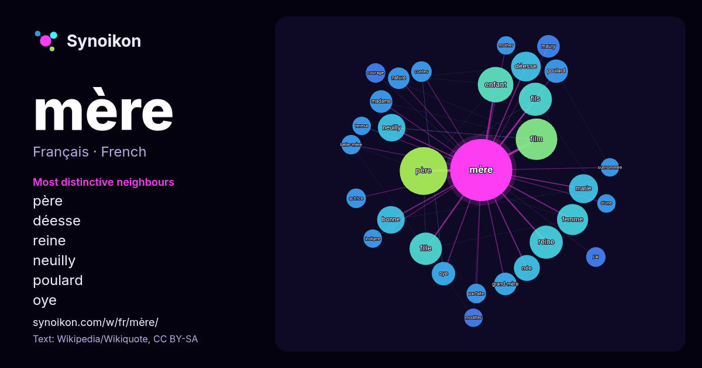

Français · liste des mots du jour
mère
“mother” · Les mots trouvés autour de lui dans 1133 occurrences issues de Wikipédia, Wikiquote.

Voisins les plus spécifiques
- père 23×
- déesse 20×
- reine 20×
- neuilly 19×
- poulard 14×
- oye 14×
- enfant 13×
- marie 13×
- bonne 13×
- maury 13×
- grand-mère 12×
- madame 12×
- film 11×
- fille 11×
- contes 10×
- j’ai 10.0×
- belle-mère 9.8×
- fils 9.8×
- parfaite 9.6×
- courage 9.5×
× = combien de fois plus souvent que dans le texte général de Wikipédia.
Voisins les plus fréquents
- père 54
- film 41
- enfant 30
- fils 26
- reine 26
- fille 25
- femme 23
- déesse 21
- marie 20
- maison 19
- bonne 18
- neuilly 18
- roi 17
- née 16
- société 16
- français 15
- série 14
- famille 13
- française 13
- oye 13
En contexte
- Cet article possède des homonymes et des paronymes, voir Mere (homonymie) et La Mère. Pour les articles ayant des titres homophones, voir Maire (homonymie) Wikipedia snippets · Mère
- vue spécifiquement musulman, voir Maryam (mère de Îsâ). Pour les articles homonymes, voir Marie et Bonne Mère. Marie (en araméen ܡܪܝܡ, Maryam ; en hébreu Wikipedia snippets · Marie (mère de Jésus)
- Neuilly sa mère, sa mère ! Série Pour plus de détails, voir Fiche technique et Distribution. Neuilly sa mère, sa mère ! est un film français réalisé par Wikipedia snippets · Neuilly sa mère, sa mère !
- Éditions de Ta Mère, Ma mère et Sa mère. Pour l’article homonyme, voir Ta mère (film). Pour la technique de laboratoire, voir TAMERE. Ta mère Écouter est Wikipedia snippets · Ta mère
- « Maison mère » redirige ici. Pour le bâtiment religieux, voir Maison-mère. Une société mère est une société qui possède une ou plusieurs filiales, c’est-à-dire Wikipedia snippets · Société mère
- Sa mère ou moi ! Pour plus de détails, voir Fiche technique et Distribution. Sa mère ou moi ! ou Ma belle-mère est un monstre au Québec (Monster-in-Law) Wikipedia snippets · Sa mère ou moi !
- Neuilly sa mère ! Série Pour plus de détails, voir Fiche technique et Distribution. Neuilly sa mère ! est un film français réalisé par Gabriel Julien-Laferrière Wikipedia snippets · Neuilly sa mère !
- conventions filmographiques. Ma mère, moi et ma mère Pour plus de détails, voir Fiche technique et Distribution. Ma mère, moi et ma mère ou N'importe où sauf ici Wikipedia snippets · Ma mère, moi et ma mère
Autres mots
- art
- automne
- carte
- chanson
- chat
- chemin
- cheval
- chien
- climat
- cloche
- cœur
- dieu
- désert
- eau
- famille
- forêt
- histoire
- hiver
- horloge
- jardin
- langue
- miel
- miroir
- monnaie
- montagne
- mort
- nature
- nourriture
- ombre
- pain
- pluie
- pont
- pouvoir
- printemps
- santé
- science
- sel
- silence
- temps
- tempête
- thé
- train
- travail
- trésor
- vie
- ville
- vérité
- étoile
- île
Précalculé le 2026-10-09 avec les paramètres par défaut (±5 mots, corpus moyen). La carte interactive peut l’actualiser avec des données en direct.
Interface traduite automatiquement ; corrections bienvenues.